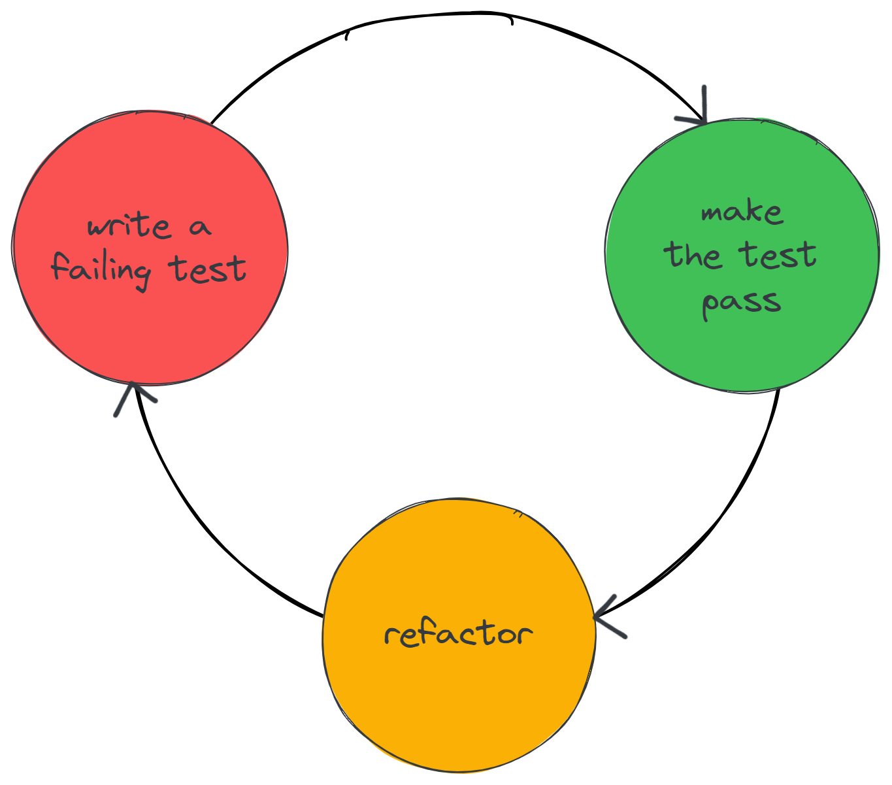
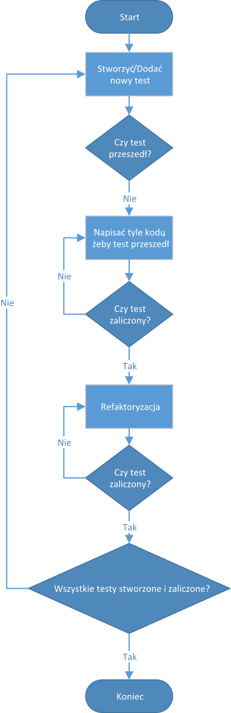
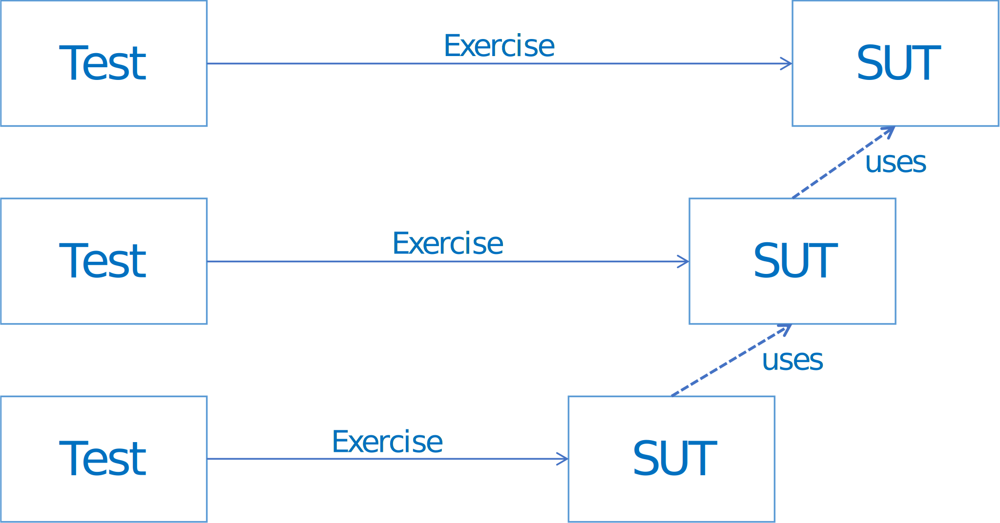
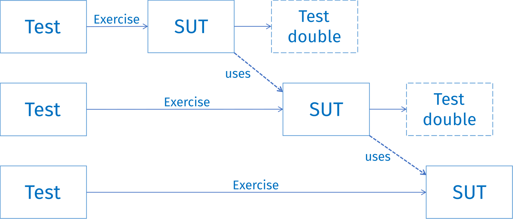

Wstęp do TDD#
Test-Driven Development (TDD) to technika tworzenia oprogramowania sterowana przez testy:
Utrzymujemy kompletny zestaw testów programisty (Programmer Tests)
Kod nie powinien trafić do produkcji, jeśli nie ma powiązanych testów
Najpierw piszemy testy
Testy określają, jaki kod powinniśmy napisać
Testy programisty#
Testy programisty służą do sprawdzenia, czy klasa wykazuje prawidłowe zachowanie. Są tworzone przez programistę, który pisze kod do przetestowania.
Podobne do testów jednostkowych, ale tworzone z innego powodu:
Testy jednostkowe tworzone są w celu sprawdzenia, czy napisany już kod działa
Testy programisty definiują, co to znaczy, że kod działa
Testy programisty nazywane są w ten sposób również w celu odróżnienia od testów tworzonych przez klienta, których zadaniem jest sprawdzenie, czy system działa prawidłowo z punktu widzenia użytkownika.
Używanie TDD oznacza teoretycznie, że dysponujemy kompletnym zestawem testów. Dzieje się tak, ponieważ nie może istnieć kod, jeśli nie istnieje test, który ten kod powinien przejść. Piszemy test, a potem (i nie wcześniej) piszemy kod, który jest testowany przez ten test. W systemie nie powinien istnieć kod, który nie został napisany w odpowiedzi na test.
Jeśli mamy do zaimplementowania jakiś fragment funkcjonalności, to najpierw tworzymy kod, który sprawdzi, czy ta funkcjonalność działa zgodnie z wymaganiami, a dopiero potem implementujemy samą funkcjonalność. Tworzymy test, a następnie tylko tyle kodu, żeby test mógł przejść.
Testy określają, jaki kod powinniśmy napisać. Pisząc tylko kod wymagany do przejścia testu ograniczamy ilość kodu do napisania. Do weryfikacji testu tworzymy najprostszy, działający kod.
Trzy prawa TDD#
TDD zakłada pisanie testów jednostkowych na początku, przed napisanie kodu produkcyjnego.
Możemy zdefiniować trzy podstawowe prawa TDD:
Nie można zacząć pisać kodu produkcyjnego przed zakończeniem pisania testu jednostkowego, który nie jest spełniony.
Kod testu jednostkowego powinien być tylko tak długi, aby wystarczył do niespełnienia testu, a błędna kompilacja jest jednocześnie nieudanym testem.
Nie można pisać większej ilości kodu produkcyjnego, niż jest wymagana do przejścia testu jednostkowego.
Te trzy prawa zamykają się w cyklu, który trwa prawdopodobnie kilkadziesiąt sekund. Testy i kod produkcyjny są pisane razem, przy czym testy są pisane kilka sekund wcześniej niż kod produkcyjny.
Important
Kod testów jest tak samo ważny, jak kod produkcyjny.
Cykl Red-Green-Refactor#
Aplikacja TDD jest rozwijana w mikro-cyklach:
Napisz test
Napisz tyle kodu, aby test został spełniony
Zrefaktoryzuj kod do najprostszej implementacji funkcjonalności określonej przez test
Ten cykl nazywa się cyklem Red-Green-Refactor.
{kind=link}
Algorytm rozwoju aplikacji TDD#
Standardowy algorytm rozwijania aplikacji z użyciem TDD wygląda następująco:
{kind=link}
Zalety TDD#
Stosując TDD mamy natychmiastowy feedback dotyczący jakości zarówno implementacji (“Czy to działa?”), jak i projektu (“Czy to jest dobrze zaprojektowane?”).
Pisząc testy programisty:
Definiujemy kryteria akceptacji dla następnego fragmentu kodu produkcyjnego, który będzie utworzony w odpowiedzi na test
Programista staje się klientem własnego kodu
Promujemy implementację nakierowaną na interfejsy. Korzystamy z luźno powiązanych komponentów (loosly-coupled), aby łatwiej testować obiekty w izolacji.
Dodajemy wykonywalny opis, co tworzony kod robi. Tworzymy kompilowalną i uruchamialną dokumentację funkcjonalności kodu.
Tworzymy jednocześnie zestaw testów regresyjnych
Wykonując testy:
Wyłapujemy błędy, kiedy kontekst dla tworzonego kodu jest jeszcze świeży
Dostajemy informację zwrotną, czy już zakończyliśmy tworzenie danej funkcjonalności - unikamy tym samym over-engineering’u aplikacji
Inside-Out Development#
Taktyka rozwijania oprogramowania metodą Inside-Out polega na antycypowaniu potrzeb klas pochodzących z zewnętrznych warstw (modułów) systemu i pisaniu testów jednostkowych oraz kodu dla klas z warstw (modułów) wewnętrznych.
{kind=link}
Oznacza to, że testy klas warstw zewnętrznych nie są wykonywane w izolacji, ale korzystają z napisanych i przetestowanych klas warstw wewnętrznych.
Outside-In Development#
Inne podejście do TDD, które polega na projektowaniu testów i kodu na sposób Outside-In. Ten sposób rozwijania oprogramowania zmusza do rozwiązania problemu zależności od klas, które jeszcze nie zostały zaimplementowane.
{kind=link}
W tym celu konieczne jest stosowanie obiektów pozorujących Stub oraz Mock.
Zaletą podejścia outside-in jest fakt, iż pomaga ono zdefiniować jakie testy są potrzebne dla klas wewnętrznych warstw systemu.